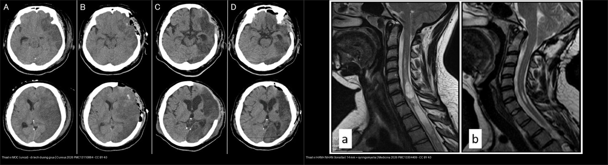
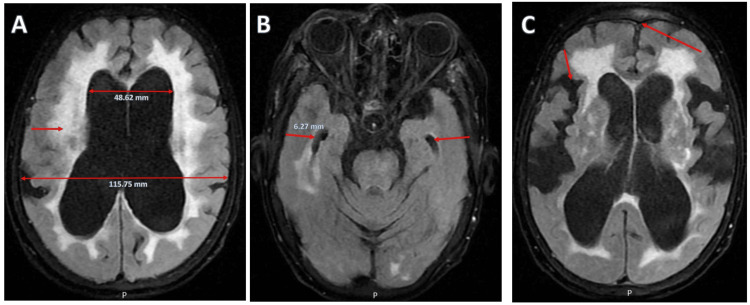
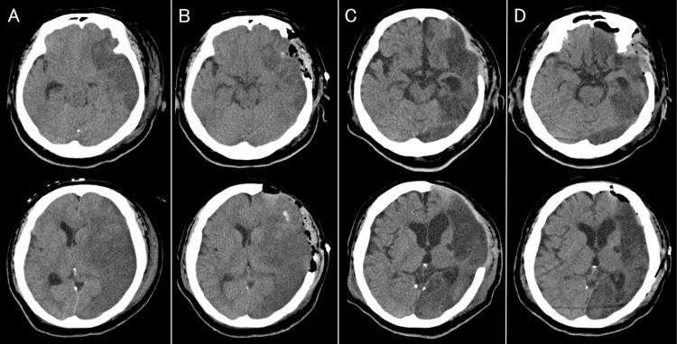
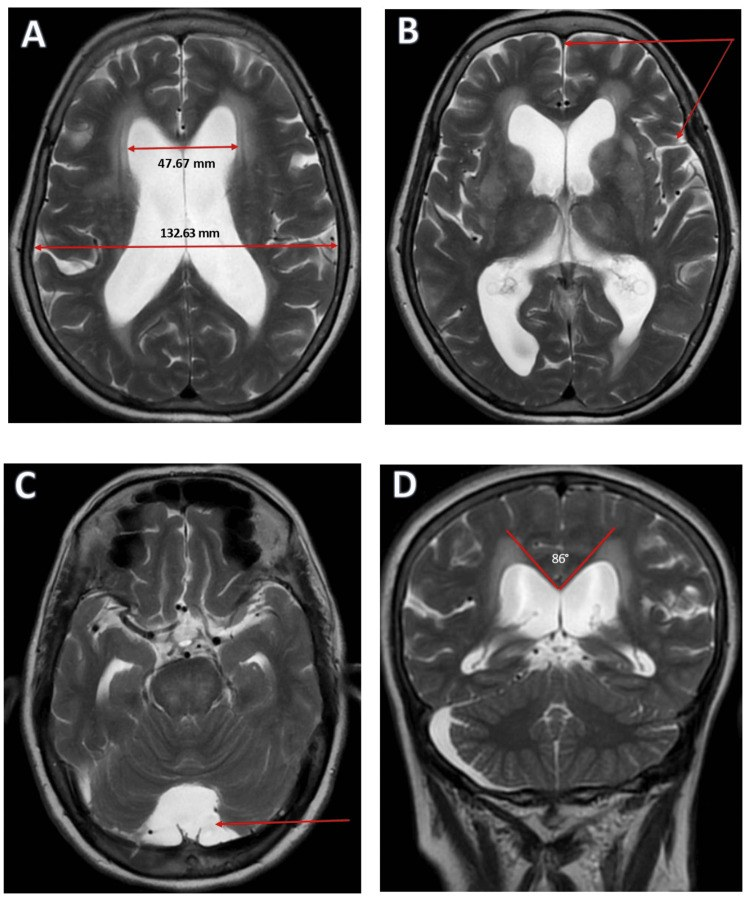
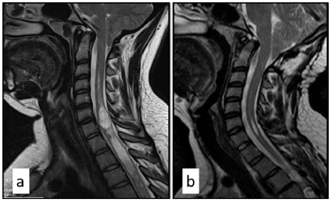

218 — Thoát vị não & não úng thủy: NPH vs tắc nghẽn vs teo / Herniation & Hydrocephalus
Tags: pattern:thoat-vi-ung-thuy vung:nao-that score:Evans
Mức chắc chắn (certainty): tổng hợp y văn (literature synthesis) — nhóm tự biên từ y văn mở, chưa gắn ca nguyên văn đơn lẻ.
1. Tổng quan — sọ cứng + khối choán chỗ = não chỉ còn đường thoát xuống
- Hộp sọ cứng dung tích cố định (~1400 mL) — TẠI SAO khối/máu/phù gây thoát vị theo đường ít kháng nhất: dưới liềm (cingulate), móc thái dương (uncal), hạnh nhân tiểu não (tonsillar) xuống lỗ chẩm.
- Não úng thủy áp lực bình thường (NPH): tái hấp thu DNT kém ở người già — tam chứng đi khó (gait) + tiểu không tự chủ (urine) + sa sút (dementia) + não thất to mà rãnh vỏ không to tương xứng (DESH).
- Ngưỡng: Evans (sừng trán/rộng sọ) > 0,3 + góc thể chai < 90° + DESH = NPH; tap test tháo 30–50 mL DNT cải thiện đi bộ = shunt đáp ứng.
2. Gamut giãn não thất + lệch đường giữa (Gamut)
- Lệch > 5 mm + khối một bên: thoát vị dưới liềm — mổ khối + mannitol + tăng thông khí.
- Móc thái dương + đồng tử giãn cùng bên: thoát vị uncal — tối khẩn (chèn não giữa).
- Hạnh nhân < −5 mm dưới lỗ chẩm: thoát vị hạnh nhân — cấm chọc thắt lưng!
- Evans > 0,3 + DESH + tap (+): NPH — shunt; giãn tương xứng vỏ + thất = teo não tuổi già.
3. Bảng so sánh phân biệt (ma trận đối chiếu)
| Thực thể (entity) | Hình ảnh điển hình | Chốt vào (rule-in) | Chốt loại (rule-out) | Gợi ý xác nhận |
|---|---|---|---|---|
| Thoát vị dưới liềm | Vành đai (cingulate) chui qua liềm + lệch > 5 mm | Lệch + khối một bên | Không khối → não úng thủy | Mổ khối + chống phù |
| Thoát vị uncal | Móc thái dương + mất bể quanh cuống + giãn đồng tử | Đồng tử + hôn mê nhanh | Hạnh nhân → lỗ chẩm | Tối khẩn, cấm chờ |
| NPH | Evans > 0,3 + góc < 90° + DESH + tap (+) | Đi-tiểu-trí + DESH + tap cải thiện | Rãnh vỏ to tương xứng → teo não | Shunt VP + tap test 30–50 mL |
| Tắc nghẽn/teo não | Tắc nghẽn: thất trên to + thất IV xẹp; Teo: thất + rãnh cùng to | Mất cân xứng = tắc; tương xứng = teo | DESH + tap (+) → NPH | ETV/shunt khi tắc; nội khoa khi teo |

Trái: thoát vị MÓC (uncal) — di lệch đường giữa, mờ bể quanh cuống (do phù/nhồi máu bán cầu). Phải: thoát vị HẠNH NHÂN (tonsillar) 14 mm dưới lỗ chẩm + syringomyelia. Nguồn: Hatakenaka S et al., Cureus 2026 (PMC13110884) + Engin R et al., Medicina (Kaunas) 2026 (PMC13304409), CC BY 4.0. Ảnh ghép letterbox, giữ tỉ lệ.4. Protocol
- CT cấp + MRI DESH + tap test: đi bộ định giờ trước/sau tháo 30–50 mL; cấm chọc thắt lưng khi thoát vị hạnh nhân/chèn hố sau.
flowchart TD
A[Giãn não thất] --> B{Rãnh vỏ có to tương xứng?}
B -->|Có tương xứng| C[Teo não: nội khoa]
B -->|Không + DESH| D[Tap test 30-50mL]
D -->|Cải thiện| E[NPH: shunt]
D -->|Không| F[Theo dõi/teotiếp]

iNPH trên FLAIR (A–C): não thất bên to (48,62 mm trên 115,75 mm — Evans > 0,3); sừng thời (temporal horn) giãn 6,27 mm; DESH — rãnh đỉnh cao hẹp, khe Sylvius rộng. Nguồn: Aung KZ et al., Cureus 2025 (PMC12548762), Figure 1, CC BY 4.0.5. Cạm bẫy
- Chọc thắt lưng khi thoát vị hạnh nhân = tụt kẹt chết người — đọc hạnh nhân trước mọi chọc DNT.
- NPH gọi nhầm Parkinson/Alzheimer → bỏ shunt cứu đi lại — tap test + DESH phân biệt.
- Não úng thủy áp lực cao sau SAH/viêm màng tưởng NPH — bối cảnh cấp + Bavenport khác mạn.
6. Tự lượng giá — Blind Quiz (ảnh trơn ngoài, đáp án ẩn trong khối chi tiết)
Ca 1 — Nam 30 tuổi, nhồi máu bán cầu trái lan rộng, hôn mê. CT sọ không cản quang các ngày. Mô tả trước khi mở đáp án.

- Câu hỏi: Ở phim đầu (A) có dấu hiệu thoát vị gì và di lệch đường giữa? Vì sao phải mở sọ giải ép, và dấu hiệu nào cho thấy đã giải quyết?
Bấm để hiện đáp án (findings + chẩn đoán)
- Dấu hiệu: (A) ngày 1 — nhồi máu lan rộng vùng động mạch não giữa trái + di lệch đường giữa + thoát vị MÓC (uncal): móc thái dương chèn xuống, mờ bể quanh cuống (perimesencephalic cistern). (B) ngày 2 sau mở sọ giải ép — di lệch giảm, thoát vị móc hồi phục. (C) ngày 40 — phù não tiêu. (D) ngày 44 — tạo hình sọ.
- Chẩn đoán – xử trí: thoát vị móc (uncal) do phù não ác tính sau nhồi máu — tối khẩn: mở sọ giải ép + chống phù (mannitol/tăng thông khí). Cấm chọc thắt lưng khi có thoát vị.
- Nguồn ảnh: Hatakenaka S et al., Cureus 2026 (PMC13110884), Figure 6, CC BY 4.0.
Ca 2 — Già 78 tuổi đi khó + tiểu không tự chủ + sa sút, quên chậm. MRI T2 sọ. Chấm Evans, góc thể chai, DESH.

- Câu hỏi: Evans của bệnh nhân? Góc thể chai? Có DESH không? NPH hay teo não — test nào quyết định shunt?
Bấm để hiện đáp án (findings + chẩn đoán)
- Dấu hiệu: (A) sừng trán 47,67 mm trên đường kính sọ trong 132,63 mm → Evans > 0,3; (B) DESH — rãnh đỉnh cao hẹp, khe Sylvius rộng; (C) tứ não thất to → úng thủy thông thương; (D) góc thể chai ~86° (< 90°).
- Chẩn đoán – xử trí: não úng thủy áp lực bình thường (NPH) — tam chứng + Evans > 0,3 + DESH + góc < 90°; tap test tháo 30–50 mL DNT, cải thiện đi bộ → shunt VP. (Teo não tuổi già sẽ có thất + rãnh cùng to tương xứng, tap âm.)
- Nguồn ảnh: Aung KZ et al., Cureus 2025 (PMC12548762), Figure 2, CC BY 4.0.
Ca 3 — Nam 19 tuổi, đau đầu + tê tay khi ho/hắt hơi. MRI T2 sagittal. Cấm thủ thuật nào?

- Câu hỏi: Hạnh nhân tiểu não xuống bao nhiêu mm dưới lỗ chẩm? Có tổn thương kèm theo? Vì sao cấm chọc thắt lưng?
Bấm để hiện đáp án (findings + chẩn đoán)
- Dấu hiệu: (a) trước mổ — thoát vị hạnh nhân tiểu não 14 mm dưới lỗ chẩm (Grade 2) + syringomyelia từ C3 xuống ngực (ống tủy chứa dịch); (b) sau giải ép hố sau 1 năm — syringomyelia giảm rõ.
- Chẩn đoán – xử trí: thoát vị hạnh nhân (tonsillar herniation) — hạnh nhân xuống dưới lỗ chẩm; cấm chọc thắt lưng vì nguy cơ tụt kẹt hạnh nhân gây tử vong. Hướng xử trí: giải ép hố sau (như ca này).
- Nguồn ảnh: Engin R et al., Medicina (Kaunas) 2026 (PMC13304409), Figure 2, CC BY 4.0.
Bài liên quan chéo
- 200 – Tổng quan Thần kinh
- 210 – Giải phẫu sọ não (Evans, não thất)
- 212 – Xuất huyết sọ (máu gây chèn ép)
Không dùng để chẩn đoán độc lập khi chưa có người hướng dẫn.